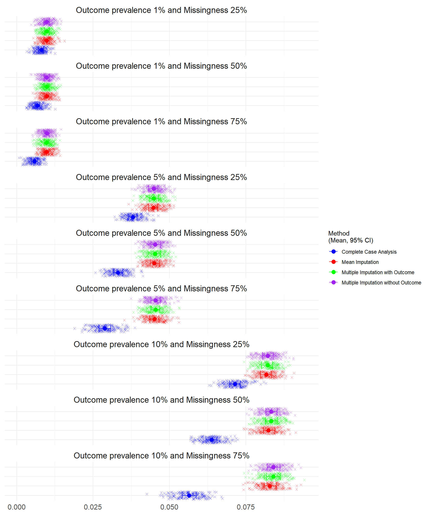
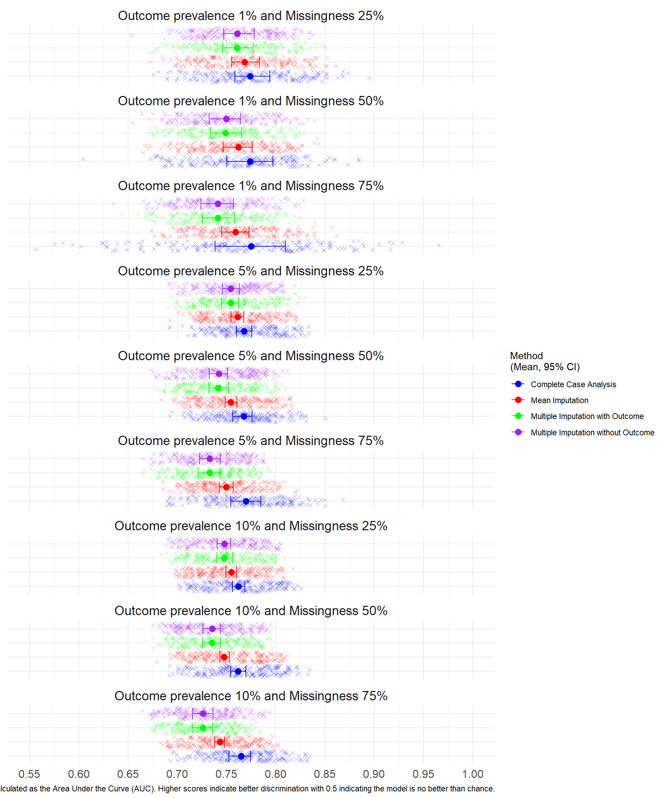
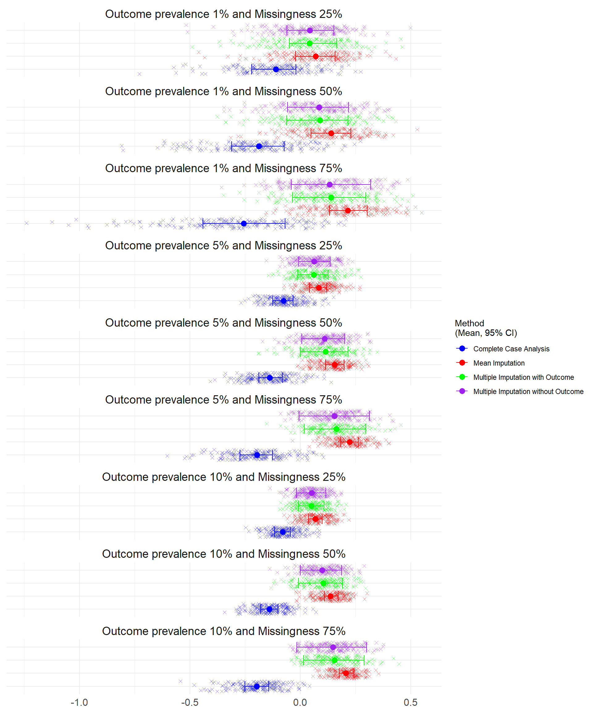
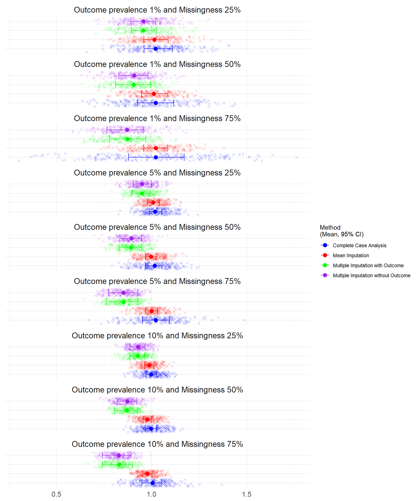
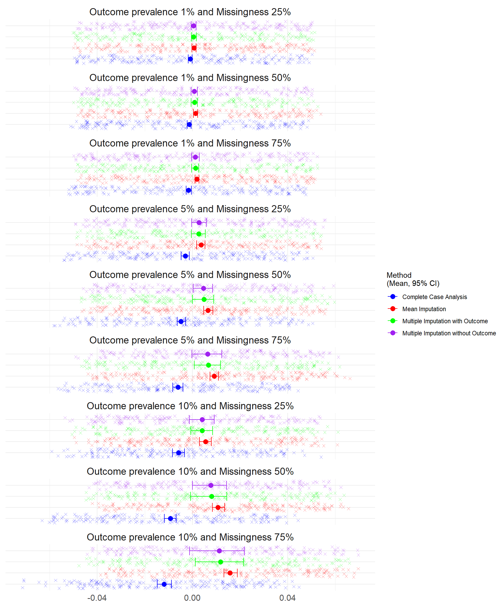
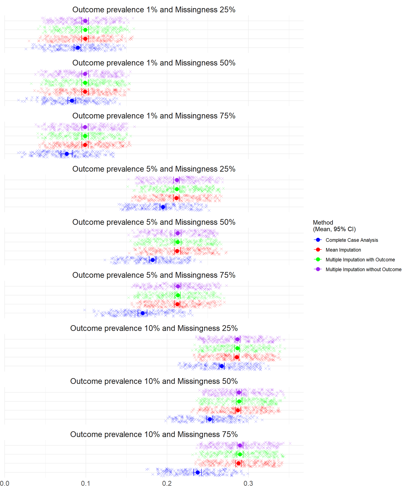

11 Results under MNAR for N= 100,000
11.1 Sample size N=100,000
11.1.1 Brier Score
The Brier score ranges between 0 (perfect accuracy) and 1 (perfect inaccuracy).
11.1.2 Discrimination
The AUC where the values were imputed by the mean imputation was consistent across all scenarios between 0.74 and 0.78

11.1.3 Calibration in the Large and Calibration Slope
The Calibration was assessed through Calibration in the Large (CATL) and the Calibration Slope.
The ideal value of CATL is 0, which indicates perfect calibration, positive values indicate the model is underestimating the risk while negative values indicate overestimation. Larger deviations from 0 suggest poorer calibration.

The ideal value of the Calibration Slope is 1 indicating perfect calibration across all risk levels. Values less than 1 suggest overfitting (predictions are too extreme), while values greater than 1 suggest underfitting (predictions are too conservative). Values that differ significantly from 1 indicate poor calibration.

11.1.4 Bias
The Bias was assessed for each simulation (where 0 indicates no bias and the model estimates are on average equal to the true values).

11.1.5 Root Mean Square Error
The RMSE was assessed for each simulation where lower error indicates a better fit of the model. The lowest prevalence simulations (1%) had the lowest mean square error.

Below, Table 11.1 summarises the Performance Measures under N=100,000.
| Scenario | Method to handle missing data | Performance Measure | Average | Lower Confidence Interval | Upper Confidence Interval | Number of simulations that failed to converge |
|---|---|---|---|---|---|---|
| Outcome prevalence 10% and Missingness 75% | Complete Case Analysis | Calibration in the Large | -0.1974 | -0.2501 | -0.1433 | 0 |
| Outcome prevalence 10% and Missingness 75% | Complete Case Analysis | Calibration Slope | 1.0047 | 0.9481 | 1.0539 | 0 |
| Outcome prevalence 10% and Missingness 75% | Complete Case Analysis | AUC | 0.7646 | 0.7526 | 0.7742 | 0 |
| Outcome prevalence 10% and Missingness 75% | Complete Case Analysis | Brier Score | 0.0564 | 0.0541 | 0.0588 | 0 |
| Outcome prevalence 10% and Missingness 75% | Complete Case Analysis | Bias | -0.0119 | -0.0148 | -0.0088 | 0 |
| Outcome prevalence 10% and Missingness 75% | Complete Case Analysis | Mean Square Error | 0.0564 | 0.0541 | 0.0588 | 0 |
| Outcome prevalence 10% and Missingness 75% | Complete Case Analysis | Root Mean Square Error | 0.2375 | 0.2327 | 0.2424 | 0 |
| Outcome prevalence 10% and Missingness 75% | Multiple Imputation without Outcome | Calibration in the Large | 0.1478 | -0.0155 | 0.3002 | 0 |
| Outcome prevalence 10% and Missingness 75% | Multiple Imputation without Outcome | Calibration Slope | 0.8277 | 0.7419 | 0.8916 | 0 |
| Outcome prevalence 10% and Missingness 75% | Multiple Imputation without Outcome | AUC | 0.7261 | 0.7154 | 0.7362 | 0 |
| Outcome prevalence 10% and Missingness 75% | Multiple Imputation without Outcome | Brier Score | 0.0839 | 0.0820 | 0.0862 | 0 |
| Outcome prevalence 10% and Missingness 75% | Multiple Imputation without Outcome | Bias | 0.0112 | -0.0012 | 0.0219 | 0 |
| Outcome prevalence 10% and Missingness 75% | Multiple Imputation without Outcome | Mean Square Error | 0.0839 | 0.0820 | 0.0862 | 0 |
| Outcome prevalence 10% and Missingness 75% | Multiple Imputation without Outcome | Root Mean Square Error | 0.2897 | 0.2863 | 0.2936 | 0 |
| Outcome prevalence 10% and Missingness 75% | Multiple Imputation with Outcome | Calibration in the Large | 0.1552 | 0.0152 | 0.2889 | 0 |
| Outcome prevalence 10% and Missingness 75% | Multiple Imputation with Outcome | Calibration Slope | 0.8288 | 0.7432 | 0.9002 | 0 |
| Outcome prevalence 10% and Missingness 75% | Multiple Imputation with Outcome | AUC | 0.7261 | 0.7152 | 0.7360 | 0 |
| Outcome prevalence 10% and Missingness 75% | Multiple Imputation with Outcome | Brier Score | 0.0839 | 0.0818 | 0.0862 | 0 |
| Outcome prevalence 10% and Missingness 75% | Multiple Imputation with Outcome | Bias | 0.0118 | 0.0012 | 0.0215 | 0 |
| Outcome prevalence 10% and Missingness 75% | Multiple Imputation with Outcome | Mean Square Error | 0.0839 | 0.0818 | 0.0862 | 0 |
| Outcome prevalence 10% and Missingness 75% | Multiple Imputation with Outcome | Root Mean Square Error | 0.2897 | 0.2860 | 0.2936 | 0 |
| Outcome prevalence 10% and Missingness 75% | Mean Imputation | Calibration in the Large | 0.2064 | 0.1755 | 0.2429 | 0 |
| Outcome prevalence 10% and Missingness 75% | Mean Imputation | Calibration Slope | 0.9777 | 0.9534 | 1.0024 | 0 |
| Outcome prevalence 10% and Missingness 75% | Mean Imputation | AUC | 0.7432 | 0.7381 | 0.7477 | 0 |
| Outcome prevalence 10% and Missingness 75% | Mean Imputation | Brier Score | 0.0828 | 0.0810 | 0.0849 | 0 |
| Outcome prevalence 10% and Missingness 75% | Mean Imputation | Bias | 0.0158 | 0.0133 | 0.0188 | 0 |
| Outcome prevalence 10% and Missingness 75% | Mean Imputation | Mean Square Error | 0.0828 | 0.0810 | 0.0849 | 0 |
| Outcome prevalence 10% and Missingness 75% | Mean Imputation | Root Mean Square Error | 0.2877 | 0.2845 | 0.2914 | 0 |
| Outcome prevalence 10% and Missingness 50% | Complete Case Analysis | Calibration in the Large | -0.1398 | -0.1792 | -0.1015 | 0 |
| Outcome prevalence 10% and Missingness 50% | Complete Case Analysis | Calibration Slope | 0.9969 | 0.9653 | 1.0269 | 0 |
| Outcome prevalence 10% and Missingness 50% | Complete Case Analysis | AUC | 0.7617 | 0.7541 | 0.7695 | 0 |
| Outcome prevalence 10% and Missingness 50% | Complete Case Analysis | Brier Score | 0.0637 | 0.0619 | 0.0656 | 0 |
| Outcome prevalence 10% and Missingness 50% | Complete Case Analysis | Bias | -0.0093 | -0.0118 | -0.0069 | 0 |
| Outcome prevalence 10% and Missingness 50% | Complete Case Analysis | Mean Square Error | 0.0637 | 0.0619 | 0.0656 | 0 |
| Outcome prevalence 10% and Missingness 50% | Complete Case Analysis | Root Mean Square Error | 0.2524 | 0.2489 | 0.2562 | 0 |
| Outcome prevalence 10% and Missingness 50% | Multiple Imputation without Outcome | Calibration in the Large | 0.0989 | -0.0002 | 0.1871 | 0 |
| Outcome prevalence 10% and Missingness 50% | Multiple Imputation without Outcome | Calibration Slope | 0.8719 | 0.8179 | 0.9229 | 0 |
| Outcome prevalence 10% and Missingness 50% | Multiple Imputation without Outcome | AUC | 0.7356 | 0.7262 | 0.7436 | 0 |
| Outcome prevalence 10% and Missingness 50% | Multiple Imputation without Outcome | Brier Score | 0.0832 | 0.0816 | 0.0852 | 0 |
| Outcome prevalence 10% and Missingness 50% | Multiple Imputation without Outcome | Bias | 0.0077 | 0.0000 | 0.0143 | 0 |
| Outcome prevalence 10% and Missingness 50% | Multiple Imputation without Outcome | Mean Square Error | 0.0832 | 0.0816 | 0.0852 | 0 |
| Outcome prevalence 10% and Missingness 50% | Multiple Imputation without Outcome | Root Mean Square Error | 0.2884 | 0.2856 | 0.2918 | 0 |
| Outcome prevalence 10% and Missingness 50% | Multiple Imputation with Outcome | Calibration in the Large | 0.1042 | -0.0092 | 0.1915 | 0 |
| Outcome prevalence 10% and Missingness 50% | Multiple Imputation with Outcome | Calibration Slope | 0.8694 | 0.8054 | 0.9246 | 0 |
| Outcome prevalence 10% and Missingness 50% | Multiple Imputation with Outcome | AUC | 0.7351 | 0.7256 | 0.7438 | 0 |
| Outcome prevalence 10% and Missingness 50% | Multiple Imputation with Outcome | Brier Score | 0.0832 | 0.0814 | 0.0854 | 0 |
| Outcome prevalence 10% and Missingness 50% | Multiple Imputation with Outcome | Bias | 0.0081 | -0.0007 | 0.0144 | 0 |
| Outcome prevalence 10% and Missingness 50% | Multiple Imputation with Outcome | Mean Square Error | 0.0832 | 0.0814 | 0.0854 | 0 |
| Outcome prevalence 10% and Missingness 50% | Multiple Imputation with Outcome | Root Mean Square Error | 0.2885 | 0.2853 | 0.2922 | 0 |
| Outcome prevalence 10% and Missingness 50% | Mean Imputation | Calibration in the Large | 0.1372 | 0.1084 | 0.1721 | 0 |
| Outcome prevalence 10% and Missingness 50% | Mean Imputation | Calibration Slope | 0.9771 | 0.9572 | 0.9982 | 0 |
| Outcome prevalence 10% and Missingness 50% | Mean Imputation | AUC | 0.7477 | 0.7433 | 0.7527 | 0 |
| Outcome prevalence 10% and Missingness 50% | Mean Imputation | Brier Score | 0.0824 | 0.0807 | 0.0845 | 0 |
| Outcome prevalence 10% and Missingness 50% | Mean Imputation | Bias | 0.0107 | 0.0084 | 0.0136 | 0 |
| Outcome prevalence 10% and Missingness 50% | Mean Imputation | Mean Square Error | 0.0824 | 0.0807 | 0.0845 | 0 |
| Outcome prevalence 10% and Missingness 50% | Mean Imputation | Root Mean Square Error | 0.2870 | 0.2841 | 0.2907 | 0 |
| Outcome prevalence 10% and Missingness 25% | Complete Case Analysis | Calibration in the Large | -0.0804 | -0.1162 | -0.0454 | 0 |
| Outcome prevalence 10% and Missingness 25% | Complete Case Analysis | Calibration Slope | 0.9983 | 0.9706 | 1.0278 | 0 |
| Outcome prevalence 10% and Missingness 25% | Complete Case Analysis | AUC | 0.7619 | 0.7558 | 0.7686 | 0 |
| Outcome prevalence 10% and Missingness 25% | Complete Case Analysis | Brier Score | 0.0714 | 0.0696 | 0.0732 | 0 |
| Outcome prevalence 10% and Missingness 25% | Complete Case Analysis | Bias | -0.0059 | -0.0084 | -0.0034 | 0 |
| Outcome prevalence 10% and Missingness 25% | Complete Case Analysis | Mean Square Error | 0.0714 | 0.0696 | 0.0732 | 0 |
| Outcome prevalence 10% and Missingness 25% | Complete Case Analysis | Root Mean Square Error | 0.2672 | 0.2639 | 0.2706 | 0 |
| Outcome prevalence 10% and Missingness 25% | Multiple Imputation without Outcome | Calibration in the Large | 0.0517 | -0.0168 | 0.1161 | 0 |
| Outcome prevalence 10% and Missingness 25% | Multiple Imputation without Outcome | Calibration Slope | 0.9281 | 0.8855 | 0.9655 | 0 |
| Outcome prevalence 10% and Missingness 25% | Multiple Imputation without Outcome | AUC | 0.7478 | 0.7405 | 0.7543 | 0 |
| Outcome prevalence 10% and Missingness 25% | Multiple Imputation without Outcome | Brier Score | 0.0821 | 0.0804 | 0.0840 | 0 |
| Outcome prevalence 10% and Missingness 25% | Multiple Imputation without Outcome | Bias | 0.0041 | -0.0014 | 0.0091 | 0 |
| Outcome prevalence 10% and Missingness 25% | Multiple Imputation without Outcome | Mean Square Error | 0.0821 | 0.0804 | 0.0840 | 0 |
| Outcome prevalence 10% and Missingness 25% | Multiple Imputation without Outcome | Root Mean Square Error | 0.2865 | 0.2836 | 0.2898 | 0 |
| Outcome prevalence 10% and Missingness 25% | Multiple Imputation with Outcome | Calibration in the Large | 0.0507 | -0.0082 | 0.1067 | 0 |
| Outcome prevalence 10% and Missingness 25% | Multiple Imputation with Outcome | Calibration Slope | 0.9271 | 0.8844 | 0.9637 | 0 |
| Outcome prevalence 10% and Missingness 25% | Multiple Imputation with Outcome | AUC | 0.7477 | 0.7401 | 0.7559 | 0 |
| Outcome prevalence 10% and Missingness 25% | Multiple Imputation with Outcome | Brier Score | 0.0821 | 0.0801 | 0.0838 | 0 |
| Outcome prevalence 10% and Missingness 25% | Multiple Imputation with Outcome | Bias | 0.0040 | -0.0007 | 0.0084 | 0 |
| Outcome prevalence 10% and Missingness 25% | Multiple Imputation with Outcome | Mean Square Error | 0.0821 | 0.0801 | 0.0838 | 0 |
| Outcome prevalence 10% and Missingness 25% | Multiple Imputation with Outcome | Root Mean Square Error | 0.2866 | 0.2830 | 0.2894 | 0 |
| Outcome prevalence 10% and Missingness 25% | Mean Imputation | Calibration in the Large | 0.0686 | 0.0372 | 0.0995 | 0 |
| Outcome prevalence 10% and Missingness 25% | Mean Imputation | Calibration Slope | 0.9877 | 0.9630 | 1.0125 | 0 |
| Outcome prevalence 10% and Missingness 25% | Mean Imputation | AUC | 0.7548 | 0.7493 | 0.7602 | 0 |
| Outcome prevalence 10% and Missingness 25% | Mean Imputation | Brier Score | 0.0816 | 0.0797 | 0.0834 | 0 |
| Outcome prevalence 10% and Missingness 25% | Mean Imputation | Bias | 0.0054 | 0.0029 | 0.0079 | 0 |
| Outcome prevalence 10% and Missingness 25% | Mean Imputation | Mean Square Error | 0.0816 | 0.0797 | 0.0834 | 0 |
| Outcome prevalence 10% and Missingness 25% | Mean Imputation | Root Mean Square Error | 0.2857 | 0.2824 | 0.2887 | 0 |
| Outcome prevalence 1% and Missingness 75% | Complete Case Analysis | Calibration in the Large | -0.2560 | -0.4412 | -0.0694 | 0 |
| Outcome prevalence 1% and Missingness 75% | Complete Case Analysis | Calibration Slope | 1.0222 | 0.8794 | 1.1719 | 0 |
| Outcome prevalence 1% and Missingness 75% | Complete Case Analysis | AUC | 0.7749 | 0.7385 | 0.8096 | 0 |
| Outcome prevalence 1% and Missingness 75% | Complete Case Analysis | Brier Score | 0.0058 | 0.0048 | 0.0069 | 0 |
| Outcome prevalence 1% and Missingness 75% | Complete Case Analysis | Bias | -0.0017 | -0.0026 | -0.0005 | 0 |
| Outcome prevalence 1% and Missingness 75% | Complete Case Analysis | Mean Square Error | 0.0058 | 0.0048 | 0.0069 | 0 |
| Outcome prevalence 1% and Missingness 75% | Complete Case Analysis | Root Mean Square Error | 0.0763 | 0.0694 | 0.0830 | 0 |
| Outcome prevalence 1% and Missingness 75% | Multiple Imputation without Outcome | Calibration in the Large | 0.1318 | -0.0406 | 0.3178 | 0 |
| Outcome prevalence 1% and Missingness 75% | Multiple Imputation without Outcome | Calibration Slope | 0.8714 | 0.7655 | 0.9550 | 0 |
| Outcome prevalence 1% and Missingness 75% | Multiple Imputation without Outcome | AUC | 0.7413 | 0.7239 | 0.7569 | 0 |
| Outcome prevalence 1% and Missingness 75% | Multiple Imputation without Outcome | Brier Score | 0.0098 | 0.0090 | 0.0106 | 0 |
| Outcome prevalence 1% and Missingness 75% | Multiple Imputation without Outcome | Bias | 0.0012 | -0.0004 | 0.0029 | 0 |
| Outcome prevalence 1% and Missingness 75% | Multiple Imputation without Outcome | Mean Square Error | 0.0098 | 0.0090 | 0.0106 | 0 |
| Outcome prevalence 1% and Missingness 75% | Multiple Imputation without Outcome | Root Mean Square Error | 0.0989 | 0.0950 | 0.1028 | 0 |
| Outcome prevalence 1% and Missingness 75% | Multiple Imputation with Outcome | Calibration in the Large | 0.1397 | -0.0354 | 0.2967 | 0 |
| Outcome prevalence 1% and Missingness 75% | Multiple Imputation with Outcome | Calibration Slope | 0.8726 | 0.7787 | 0.9696 | 0 |
| Outcome prevalence 1% and Missingness 75% | Multiple Imputation with Outcome | AUC | 0.7413 | 0.7254 | 0.7579 | 0 |
| Outcome prevalence 1% and Missingness 75% | Multiple Imputation with Outcome | Brier Score | 0.0098 | 0.0090 | 0.0106 | 0 |
| Outcome prevalence 1% and Missingness 75% | Multiple Imputation with Outcome | Bias | 0.0013 | -0.0003 | 0.0026 | 0 |
| Outcome prevalence 1% and Missingness 75% | Multiple Imputation with Outcome | Mean Square Error | 0.0098 | 0.0090 | 0.0106 | 0 |
| Outcome prevalence 1% and Missingness 75% | Multiple Imputation with Outcome | Root Mean Square Error | 0.0989 | 0.0950 | 0.1029 | 0 |
| Outcome prevalence 1% and Missingness 75% | Mean Imputation | Calibration in the Large | 0.2143 | 0.1330 | 0.3032 | 0 |
| Outcome prevalence 1% and Missingness 75% | Mean Imputation | Calibration Slope | 1.0221 | 0.9584 | 1.0821 | 0 |
| Outcome prevalence 1% and Missingness 75% | Mean Imputation | AUC | 0.7590 | 0.7450 | 0.7728 | 0 |
| Outcome prevalence 1% and Missingness 75% | Mean Imputation | Brier Score | 0.0098 | 0.0090 | 0.0106 | 0 |
| Outcome prevalence 1% and Missingness 75% | Mean Imputation | Bias | 0.0019 | 0.0011 | 0.0028 | 0 |
| Outcome prevalence 1% and Missingness 75% | Mean Imputation | Mean Square Error | 0.0098 | 0.0090 | 0.0106 | 0 |
| Outcome prevalence 1% and Missingness 75% | Mean Imputation | Root Mean Square Error | 0.0988 | 0.0949 | 0.1028 | 0 |
| Outcome prevalence 1% and Missingness 50% | Complete Case Analysis | Calibration in the Large | -0.1873 | -0.3107 | -0.0734 | 0 |
| Outcome prevalence 1% and Missingness 50% | Complete Case Analysis | Calibration Slope | 1.0220 | 0.9243 | 1.1167 | 0 |
| Outcome prevalence 1% and Missingness 50% | Complete Case Analysis | AUC | 0.7737 | 0.7504 | 0.7973 | 0 |
| Outcome prevalence 1% and Missingness 50% | Complete Case Analysis | Brier Score | 0.0068 | 0.0060 | 0.0076 | 0 |
| Outcome prevalence 1% and Missingness 50% | Complete Case Analysis | Bias | -0.0014 | -0.0022 | -0.0006 | 0 |
| Outcome prevalence 1% and Missingness 50% | Complete Case Analysis | Mean Square Error | 0.0068 | 0.0060 | 0.0076 | 0 |
| Outcome prevalence 1% and Missingness 50% | Complete Case Analysis | Root Mean Square Error | 0.0827 | 0.0776 | 0.0873 | 0 |
| Outcome prevalence 1% and Missingness 50% | Multiple Imputation without Outcome | Calibration in the Large | 0.0844 | -0.0572 | 0.2181 | 0 |
| Outcome prevalence 1% and Missingness 50% | Multiple Imputation without Outcome | Calibration Slope | 0.9073 | 0.8278 | 0.9813 | 0 |
| Outcome prevalence 1% and Missingness 50% | Multiple Imputation without Outcome | AUC | 0.7495 | 0.7324 | 0.7641 | 0 |
| Outcome prevalence 1% and Missingness 50% | Multiple Imputation without Outcome | Brier Score | 0.0098 | 0.0090 | 0.0107 | 0 |
| Outcome prevalence 1% and Missingness 50% | Multiple Imputation without Outcome | Bias | 0.0008 | -0.0005 | 0.0020 | 0 |
| Outcome prevalence 1% and Missingness 50% | Multiple Imputation without Outcome | Mean Square Error | 0.0098 | 0.0090 | 0.0107 | 0 |
| Outcome prevalence 1% and Missingness 50% | Multiple Imputation without Outcome | Root Mean Square Error | 0.0989 | 0.0949 | 0.1032 | 0 |
| Outcome prevalence 1% and Missingness 50% | Multiple Imputation with Outcome | Calibration in the Large | 0.0896 | -0.0621 | 0.2168 | 0 |
| Outcome prevalence 1% and Missingness 50% | Multiple Imputation with Outcome | Calibration Slope | 0.9048 | 0.8105 | 0.9945 | 0 |
| Outcome prevalence 1% and Missingness 50% | Multiple Imputation with Outcome | AUC | 0.7489 | 0.7336 | 0.7651 | 0 |
| Outcome prevalence 1% and Missingness 50% | Multiple Imputation with Outcome | Brier Score | 0.0098 | 0.0090 | 0.0106 | 0 |
| Outcome prevalence 1% and Missingness 50% | Multiple Imputation with Outcome | Bias | 0.0008 | -0.0006 | 0.0020 | 0 |
| Outcome prevalence 1% and Missingness 50% | Multiple Imputation with Outcome | Mean Square Error | 0.0098 | 0.0090 | 0.0106 | 0 |
| Outcome prevalence 1% and Missingness 50% | Multiple Imputation with Outcome | Root Mean Square Error | 0.0990 | 0.0949 | 0.1031 | 0 |
| Outcome prevalence 1% and Missingness 50% | Mean Imputation | Calibration in the Large | 0.1395 | 0.0486 | 0.2290 | 0 |
| Outcome prevalence 1% and Missingness 50% | Mean Imputation | Calibration Slope | 1.0112 | 0.9471 | 1.0853 | 0 |
| Outcome prevalence 1% and Missingness 50% | Mean Imputation | AUC | 0.7620 | 0.7465 | 0.7761 | 0 |
| Outcome prevalence 1% and Missingness 50% | Mean Imputation | Brier Score | 0.0098 | 0.0090 | 0.0106 | 0 |
| Outcome prevalence 1% and Missingness 50% | Mean Imputation | Bias | 0.0013 | 0.0004 | 0.0022 | 0 |
| Outcome prevalence 1% and Missingness 50% | Mean Imputation | Mean Square Error | 0.0098 | 0.0090 | 0.0106 | 0 |
| Outcome prevalence 1% and Missingness 50% | Mean Imputation | Root Mean Square Error | 0.0989 | 0.0948 | 0.1031 | 0 |
| Outcome prevalence 1% and Missingness 25% | Complete Case Analysis | Calibration in the Large | -0.1102 | -0.2192 | -0.0196 | 0 |
| Outcome prevalence 1% and Missingness 25% | Complete Case Analysis | Calibration Slope | 1.0212 | 0.9595 | 1.1083 | 0 |
| Outcome prevalence 1% and Missingness 25% | Complete Case Analysis | AUC | 0.7739 | 0.7585 | 0.7938 | 0 |
| Outcome prevalence 1% and Missingness 25% | Complete Case Analysis | Brier Score | 0.0081 | 0.0073 | 0.0088 | 0 |
| Outcome prevalence 1% and Missingness 25% | Complete Case Analysis | Bias | -0.0009 | -0.0018 | -0.0002 | 0 |
| Outcome prevalence 1% and Missingness 25% | Complete Case Analysis | Mean Square Error | 0.0081 | 0.0073 | 0.0088 | 0 |
| Outcome prevalence 1% and Missingness 25% | Complete Case Analysis | Root Mean Square Error | 0.0899 | 0.0853 | 0.0938 | 0 |
| Outcome prevalence 1% and Missingness 25% | Multiple Imputation without Outcome | Calibration in the Large | 0.0432 | -0.0607 | 0.1519 | 0 |
| Outcome prevalence 1% and Missingness 25% | Multiple Imputation without Outcome | Calibration Slope | 0.9570 | 0.8915 | 1.0208 | 0 |
| Outcome prevalence 1% and Missingness 25% | Multiple Imputation without Outcome | AUC | 0.7609 | 0.7472 | 0.7782 | 0 |
| Outcome prevalence 1% and Missingness 25% | Multiple Imputation without Outcome | Brier Score | 0.0098 | 0.0090 | 0.0107 | 0 |
| Outcome prevalence 1% and Missingness 25% | Multiple Imputation without Outcome | Bias | 0.0004 | -0.0006 | 0.0015 | 0 |
| Outcome prevalence 1% and Missingness 25% | Multiple Imputation without Outcome | Mean Square Error | 0.0098 | 0.0090 | 0.0107 | 0 |
| Outcome prevalence 1% and Missingness 25% | Multiple Imputation without Outcome | Root Mean Square Error | 0.0991 | 0.0948 | 0.1034 | 0 |
| Outcome prevalence 1% and Missingness 25% | Multiple Imputation with Outcome | Calibration in the Large | 0.0419 | -0.0490 | 0.1644 | 0 |
| Outcome prevalence 1% and Missingness 25% | Multiple Imputation with Outcome | Calibration Slope | 0.9553 | 0.8946 | 1.0266 | 0 |
| Outcome prevalence 1% and Missingness 25% | Multiple Imputation with Outcome | AUC | 0.7607 | 0.7460 | 0.7771 | 0 |
| Outcome prevalence 1% and Missingness 25% | Multiple Imputation with Outcome | Brier Score | 0.0098 | 0.0090 | 0.0107 | 0 |
| Outcome prevalence 1% and Missingness 25% | Multiple Imputation with Outcome | Bias | 0.0004 | -0.0004 | 0.0016 | 0 |
| Outcome prevalence 1% and Missingness 25% | Multiple Imputation with Outcome | Mean Square Error | 0.0098 | 0.0090 | 0.0107 | 0 |
| Outcome prevalence 1% and Missingness 25% | Multiple Imputation with Outcome | Root Mean Square Error | 0.0991 | 0.0948 | 0.1034 | 0 |
| Outcome prevalence 1% and Missingness 25% | Mean Imputation | Calibration in the Large | 0.0692 | -0.0219 | 0.1581 | 0 |
| Outcome prevalence 1% and Missingness 25% | Mean Imputation | Calibration Slope | 1.0145 | 0.9590 | 1.0874 | 0 |
| Outcome prevalence 1% and Missingness 25% | Mean Imputation | AUC | 0.7682 | 0.7554 | 0.7835 | 0 |
| Outcome prevalence 1% and Missingness 25% | Mean Imputation | Brier Score | 0.0098 | 0.0090 | 0.0107 | 0 |
| Outcome prevalence 1% and Missingness 25% | Mean Imputation | Bias | 0.0007 | -0.0002 | 0.0016 | 0 |
| Outcome prevalence 1% and Missingness 25% | Mean Imputation | Mean Square Error | 0.0098 | 0.0090 | 0.0107 | 0 |
| Outcome prevalence 1% and Missingness 25% | Mean Imputation | Root Mean Square Error | 0.0990 | 0.0947 | 0.1033 | 0 |
| Outcome prevalence 5% and Missingness 75% | Complete Case Analysis | Calibration in the Large | -0.1961 | -0.2723 | -0.1260 | 0 |
| Outcome prevalence 5% and Missingness 75% | Complete Case Analysis | Calibration Slope | 1.0215 | 0.9519 | 1.0940 | 0 |
| Outcome prevalence 5% and Missingness 75% | Complete Case Analysis | AUC | 0.7698 | 0.7542 | 0.7849 | 0 |
| Outcome prevalence 5% and Missingness 75% | Complete Case Analysis | Brier Score | 0.0288 | 0.0269 | 0.0307 | 0 |
| Outcome prevalence 5% and Missingness 75% | Complete Case Analysis | Bias | -0.0061 | -0.0083 | -0.0040 | 0 |
| Outcome prevalence 5% and Missingness 75% | Complete Case Analysis | Mean Square Error | 0.0288 | 0.0269 | 0.0307 | 0 |
| Outcome prevalence 5% and Missingness 75% | Complete Case Analysis | Root Mean Square Error | 0.1698 | 0.1640 | 0.1752 | 0 |
| Outcome prevalence 5% and Missingness 75% | Multiple Imputation without Outcome | Calibration in the Large | 0.1555 | -0.0054 | 0.3135 | 0 |
| Outcome prevalence 5% and Missingness 75% | Multiple Imputation without Outcome | Calibration Slope | 0.8519 | 0.7742 | 0.9265 | 0 |
| Outcome prevalence 5% and Missingness 75% | Multiple Imputation without Outcome | AUC | 0.7328 | 0.7226 | 0.7435 | 0 |
| Outcome prevalence 5% and Missingness 75% | Multiple Imputation without Outcome | Brier Score | 0.0455 | 0.0439 | 0.0470 | 0 |
| Outcome prevalence 5% and Missingness 75% | Multiple Imputation without Outcome | Bias | 0.0064 | -0.0002 | 0.0123 | 0 |
| Outcome prevalence 5% and Missingness 75% | Multiple Imputation without Outcome | Mean Square Error | 0.0455 | 0.0439 | 0.0470 | 0 |
| Outcome prevalence 5% and Missingness 75% | Multiple Imputation without Outcome | Root Mean Square Error | 0.2132 | 0.2095 | 0.2168 | 0 |
| Outcome prevalence 5% and Missingness 75% | Multiple Imputation with Outcome | Calibration in the Large | 0.1629 | 0.0185 | 0.2957 | 0 |
| Outcome prevalence 5% and Missingness 75% | Multiple Imputation with Outcome | Calibration Slope | 0.8530 | 0.7616 | 0.9293 | 0 |
| Outcome prevalence 5% and Missingness 75% | Multiple Imputation with Outcome | AUC | 0.7328 | 0.7210 | 0.7435 | 0 |
| Outcome prevalence 5% and Missingness 75% | Multiple Imputation with Outcome | Brier Score | 0.0455 | 0.0440 | 0.0469 | 0 |
| Outcome prevalence 5% and Missingness 75% | Multiple Imputation with Outcome | Bias | 0.0067 | 0.0008 | 0.0117 | 0 |
| Outcome prevalence 5% and Missingness 75% | Multiple Imputation with Outcome | Mean Square Error | 0.0455 | 0.0440 | 0.0469 | 0 |
| Outcome prevalence 5% and Missingness 75% | Multiple Imputation with Outcome | Root Mean Square Error | 0.2132 | 0.2097 | 0.2165 | 0 |
| Outcome prevalence 5% and Missingness 75% | Mean Imputation | Calibration in the Large | 0.2230 | 0.1821 | 0.2620 | 0 |
| Outcome prevalence 5% and Missingness 75% | Mean Imputation | Calibration Slope | 0.9997 | 0.9686 | 1.0325 | 0 |
| Outcome prevalence 5% and Missingness 75% | Mean Imputation | AUC | 0.7497 | 0.7427 | 0.7567 | 0 |
| Outcome prevalence 5% and Missingness 75% | Mean Imputation | Brier Score | 0.0451 | 0.0436 | 0.0466 | 0 |
| Outcome prevalence 5% and Missingness 75% | Mean Imputation | Bias | 0.0092 | 0.0073 | 0.0109 | 0 |
| Outcome prevalence 5% and Missingness 75% | Mean Imputation | Mean Square Error | 0.0451 | 0.0436 | 0.0466 | 0 |
| Outcome prevalence 5% and Missingness 75% | Mean Imputation | Root Mean Square Error | 0.2124 | 0.2087 | 0.2158 | 0 |
| Outcome prevalence 5% and Missingness 50% | Complete Case Analysis | Calibration in the Large | -0.1381 | -0.1878 | -0.0809 | 0 |
| Outcome prevalence 5% and Missingness 50% | Complete Case Analysis | Calibration Slope | 1.0163 | 0.9668 | 1.0546 | 0 |
| Outcome prevalence 5% and Missingness 50% | Complete Case Analysis | AUC | 0.7676 | 0.7562 | 0.7761 | 0 |
| Outcome prevalence 5% and Missingness 50% | Complete Case Analysis | Brier Score | 0.0332 | 0.0316 | 0.0347 | 0 |
| Outcome prevalence 5% and Missingness 50% | Complete Case Analysis | Bias | -0.0048 | -0.0064 | -0.0029 | 0 |
| Outcome prevalence 5% and Missingness 50% | Complete Case Analysis | Mean Square Error | 0.0332 | 0.0316 | 0.0347 | 0 |
| Outcome prevalence 5% and Missingness 50% | Complete Case Analysis | Root Mean Square Error | 0.1821 | 0.1779 | 0.1863 | 0 |
| Outcome prevalence 5% and Missingness 50% | Multiple Imputation without Outcome | Calibration in the Large | 0.1096 | 0.0069 | 0.2003 | 0 |
| Outcome prevalence 5% and Missingness 50% | Multiple Imputation without Outcome | Calibration Slope | 0.8942 | 0.8333 | 0.9476 | 0 |
| Outcome prevalence 5% and Missingness 50% | Multiple Imputation without Outcome | AUC | 0.7421 | 0.7325 | 0.7510 | 0 |
| Outcome prevalence 5% and Missingness 50% | Multiple Imputation without Outcome | Brier Score | 0.0453 | 0.0439 | 0.0471 | 0 |
| Outcome prevalence 5% and Missingness 50% | Multiple Imputation without Outcome | Bias | 0.0046 | 0.0003 | 0.0084 | 0 |
| Outcome prevalence 5% and Missingness 50% | Multiple Imputation without Outcome | Mean Square Error | 0.0453 | 0.0439 | 0.0471 | 0 |
| Outcome prevalence 5% and Missingness 50% | Multiple Imputation without Outcome | Root Mean Square Error | 0.2129 | 0.2095 | 0.2171 | 0 |
| Outcome prevalence 5% and Missingness 50% | Multiple Imputation with Outcome | Calibration in the Large | 0.1148 | -0.0003 | 0.2170 | 0 |
| Outcome prevalence 5% and Missingness 50% | Multiple Imputation with Outcome | Calibration Slope | 0.8917 | 0.8288 | 0.9491 | 0 |
| Outcome prevalence 5% and Missingness 50% | Multiple Imputation with Outcome | AUC | 0.7416 | 0.7321 | 0.7517 | 0 |
| Outcome prevalence 5% and Missingness 50% | Multiple Imputation with Outcome | Brier Score | 0.0453 | 0.0439 | 0.0471 | 0 |
| Outcome prevalence 5% and Missingness 50% | Multiple Imputation with Outcome | Bias | 0.0048 | 0.0000 | 0.0089 | 0 |
| Outcome prevalence 5% and Missingness 50% | Multiple Imputation with Outcome | Mean Square Error | 0.0453 | 0.0439 | 0.0471 | 0 |
| Outcome prevalence 5% and Missingness 50% | Multiple Imputation with Outcome | Root Mean Square Error | 0.2129 | 0.2096 | 0.2170 | 0 |
| Outcome prevalence 5% and Missingness 50% | Mean Imputation | Calibration in the Large | 0.1543 | 0.1137 | 0.1981 | 0 |
| Outcome prevalence 5% and Missingness 50% | Mean Imputation | Calibration Slope | 0.9983 | 0.9686 | 1.0246 | 0 |
| Outcome prevalence 5% and Missingness 50% | Mean Imputation | AUC | 0.7542 | 0.7485 | 0.7604 | 0 |
| Outcome prevalence 5% and Missingness 50% | Mean Imputation | Brier Score | 0.0450 | 0.0437 | 0.0468 | 0 |
| Outcome prevalence 5% and Missingness 50% | Mean Imputation | Bias | 0.0065 | 0.0047 | 0.0085 | 0 |
| Outcome prevalence 5% and Missingness 50% | Mean Imputation | Mean Square Error | 0.0450 | 0.0437 | 0.0468 | 0 |
| Outcome prevalence 5% and Missingness 50% | Mean Imputation | Root Mean Square Error | 0.2122 | 0.2090 | 0.2163 | 0 |
| Outcome prevalence 5% and Missingness 25% | Complete Case Analysis | Calibration in the Large | -0.0756 | -0.1243 | -0.0325 | 0 |
| Outcome prevalence 5% and Missingness 25% | Complete Case Analysis | Calibration Slope | 1.0183 | 0.9875 | 1.0539 | 0 |
| Outcome prevalence 5% and Missingness 25% | Complete Case Analysis | AUC | 0.7679 | 0.7603 | 0.7756 | 0 |
| Outcome prevalence 5% and Missingness 25% | Complete Case Analysis | Brier Score | 0.0380 | 0.0365 | 0.0394 | 0 |
| Outcome prevalence 5% and Missingness 25% | Complete Case Analysis | Bias | -0.0030 | -0.0048 | -0.0013 | 0 |
| Outcome prevalence 5% and Missingness 25% | Complete Case Analysis | Mean Square Error | 0.0380 | 0.0365 | 0.0394 | 0 |
| Outcome prevalence 5% and Missingness 25% | Complete Case Analysis | Root Mean Square Error | 0.1950 | 0.1911 | 0.1986 | 0 |
| Outcome prevalence 5% and Missingness 25% | Multiple Imputation without Outcome | Calibration in the Large | 0.0628 | -0.0078 | 0.1359 | 0 |
| Outcome prevalence 5% and Missingness 25% | Multiple Imputation without Outcome | Calibration Slope | 0.9496 | 0.9024 | 0.9984 | 0 |
| Outcome prevalence 5% and Missingness 25% | Multiple Imputation without Outcome | AUC | 0.7542 | 0.7457 | 0.7631 | 0 |
| Outcome prevalence 5% and Missingness 25% | Multiple Imputation without Outcome | Brier Score | 0.0449 | 0.0432 | 0.0462 | 0 |
| Outcome prevalence 5% and Missingness 25% | Multiple Imputation without Outcome | Bias | 0.0027 | -0.0003 | 0.0058 | 0 |
| Outcome prevalence 5% and Missingness 25% | Multiple Imputation without Outcome | Mean Square Error | 0.0449 | 0.0432 | 0.0462 | 0 |
| Outcome prevalence 5% and Missingness 25% | Multiple Imputation without Outcome | Root Mean Square Error | 0.2118 | 0.2079 | 0.2150 | 0 |
| Outcome prevalence 5% and Missingness 25% | Multiple Imputation with Outcome | Calibration in the Large | 0.0617 | -0.0110 | 0.1261 | 0 |
| Outcome prevalence 5% and Missingness 25% | Multiple Imputation with Outcome | Calibration Slope | 0.9486 | 0.8963 | 0.9915 | 0 |
| Outcome prevalence 5% and Missingness 25% | Multiple Imputation with Outcome | AUC | 0.7541 | 0.7449 | 0.7624 | 0 |
| Outcome prevalence 5% and Missingness 25% | Multiple Imputation with Outcome | Brier Score | 0.0449 | 0.0433 | 0.0464 | 0 |
| Outcome prevalence 5% and Missingness 25% | Multiple Imputation with Outcome | Bias | 0.0027 | -0.0005 | 0.0054 | 0 |
| Outcome prevalence 5% and Missingness 25% | Multiple Imputation with Outcome | Mean Square Error | 0.0449 | 0.0433 | 0.0464 | 0 |
| Outcome prevalence 5% and Missingness 25% | Multiple Imputation with Outcome | Root Mean Square Error | 0.2118 | 0.2082 | 0.2155 | 0 |
| Outcome prevalence 5% and Missingness 25% | Mean Imputation | Calibration in the Large | 0.0833 | 0.0414 | 0.1197 | 0 |
| Outcome prevalence 5% and Missingness 25% | Mean Imputation | Calibration Slope | 1.0085 | 0.9792 | 1.0411 | 0 |
| Outcome prevalence 5% and Missingness 25% | Mean Imputation | AUC | 0.7612 | 0.7546 | 0.7677 | 0 |
| Outcome prevalence 5% and Missingness 25% | Mean Imputation | Brier Score | 0.0447 | 0.0432 | 0.0461 | 0 |
| Outcome prevalence 5% and Missingness 25% | Mean Imputation | Bias | 0.0036 | 0.0018 | 0.0052 | 0 |
| Outcome prevalence 5% and Missingness 25% | Mean Imputation | Mean Square Error | 0.0447 | 0.0432 | 0.0461 | 0 |
| Outcome prevalence 5% and Missingness 25% | Mean Imputation | Root Mean Square Error | 0.2115 | 0.2078 | 0.2148 | 0 |